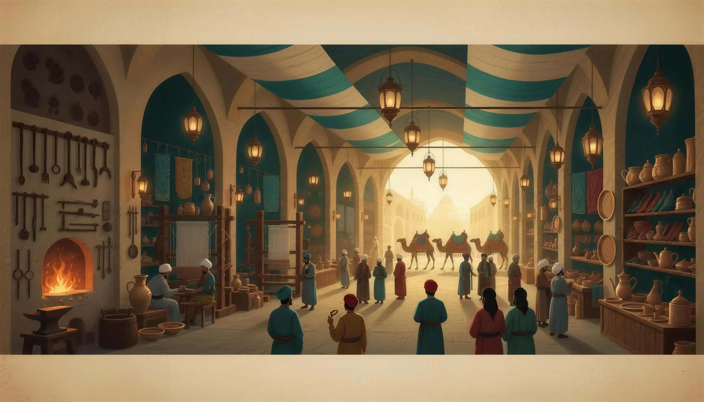

Çarşıda dükkân aç, rütbe yüksel — eline, diline, beline sahip ol

Oyuncular
Her koltuk Sen ya da Bot olabilir; tek başına botlara karşı da oynayabilirsin. Tur limitinde süre dolunca en zengin kazanır.
Kayıtlı oyun okunamadı ya da eski bir sürümden kalma — yeniden başlayabilirsin.
Zar yok: her tur bir Yol Kartı çekersin — üstündeki 1–12 sayısı kadar ilerler, altındaki Ahilik bilgisini öğrenirsin.
Akçe ile dükkân açar, Yamak → Ahi Baba rütbesi yükseltir, uğrayan rakiplerden sipariş bedeli toplarsın.
Her kare ve kart bir Ahilik dersi verir.
Çıraktan Pîre, Ahilik'in çarşı hayatını ve meslek ahlâkını bir tahta üzerinde yaşatan eğitsel strateji oyunudur: yamaklıktan pîrliğe uzanan yol.
Amaç
Dükkânlar açıp rütbe yükselterek servetini ve itibarını büyüt. Diğer herkes iflas ettiğinde son ayakta kalan kazanır. Tur limiti seçildiyse süre dolunca en zengin kazanır.
Tur akışı — zar yok
Yol Kartı çek. Üstündeki 1–12 sayısı kadar ilerlersin; altındaki Ahilik bilgisi o sayıya bağlıdır (eline, diline, beline → 3 gibi).
Boş dükkâna düşersen aç, Bilgi sorusu ile %25 indirimli al, ya da vazgeç → açık artırma başlar (senden sonraki oyuncudan başlayarak herkes teklif verir, en yükseği alır). Bilgi sorusu hakkı tur başına birdir.
Bazı kartlar farklıdır: Tekrar (ilerle + yeniden çek), Geri (geri git), Davet (en yakın panayıra / Çarşı Meydanı'na / Ahi Evran Ocağı'na), Şakacı (rakiple yer değiştir / tazminat al).
Rütbe
YamakÇırakKalfaUstaAhi Baba
Bir sektörün (renk grubu) tüm dükkânları sende ise rütbe yükseltmeye başlarsın. Rütbe arttıkça sipariş bedeli katlanır; en üst kademe Ahi Baba'dır.
Nakit sıkışınca — iflas etme!
Bir ödemeyi karşılayamazsan bir borç ekranı açılır: rütbe sat (yarı fiyat) veya dükkân ipotek et, nakdi topla, borcu öde, devam et. "Mülklerim"den istediğinde de satabilirsin.
Kartlar ve özel kareler
Fütüvvet ve Çarşı Vak'ası: değer ve olay kartları; etkisi senin mülklerine bağlanır (çarşı yangını → rütbe başına kayıp, panayır bereketi → panayır başına kazanç).
Kervansaray Hazinesi: ödenen vergiler ortada birikir; buraya düşen tüm havuzu kapar.
Şeref (Ahi Evran Ocağı / Fütüvvetnâme): alınıp satılmaz; uğrayan bankadan bereket alır (Ocak +500, Fütüvvetnâme +200).
Kethüdâ: en zengin oyuncu esnafın temsilcisi unvanını kapar, geçişte +500 alır.
Pabucu Dama: kalitesiz mal cezası! Çıkmak için 500 akçe telafi bedeli, Kefalet kartı ya da doğru Bilgi cevabı (yanlış cevap o turun hakkını bitirir). 3. turun sonunda telafi bedeli zorunludur; nakit yetmezse borç ekranı açılır.
Takas
İstediğin oyuncuyla dükkân + akçe + Kefalet kartı takas edebilirsin. Botlar da sektörlerini tamamlamak için teklif getirir (liste fiyatının iki katı); reddettiğin teklifi üç tur tekrarlamazlar. Rakibinin sektörünü tamamlatacak dükkânı bir bot ancak iki katına satar. (Rütbeli dükkân takas edilmez.)
Kontroller
Duraklat oyunu (açık artırma dahil) durdurur. Her oyuncu satırındaki sancak / usturlap düğmesiyle o koltuğu oyun ortasında Sen ↔ Bot yapabilirsin; bot, açık kalan soruyu ya da kararı devralır. Hız botların oynama hızını, 3B masa görünümünü ayarlar. Telefonda Yakın / Tüm Tahta düğmesi tahtayı büyütür ya da bütün olarak gösterir.